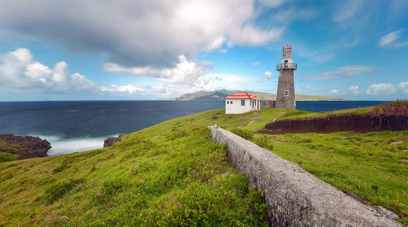

BATANES PHILIPPINES
The Batanes group of islands is the northernmost province of the Philippines. It is located between 121° 45′ to 122° 15′ east longitudes, and at 20°15′ north latitudes. Batanes is closer to Taiwan than to the northern tip of Luzon. Of the 10 volcanic islands composing the province, only three are inhabited.
|
HOW TO GET THERE?
There are 2 ways to get from Manila to Batanes Island by train, plane or bus
1. Take the train from Doroteo Jose LRT to Edsa Lrt.
2. Fly from Manila (MNL) to Basco (BSO) MNL - BSO.